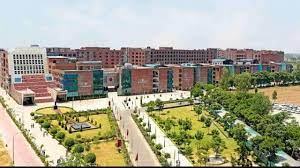

LPU
Last Updated: April 29, 2022
LPU ranks among Top 100 Institutions in India: Govt. of India NIRF Ranking 2021 offering diploma, undergraduate, postgraduate and doctorate (Ph.D) courses ....
Lovely Professional University (LPU) is a private state university located in Chaheru, Phagwara, Punjab, India. The university was established in 2005 by Lovely International Trust, under The Lovely Professional University Act, 2005 (Punjab Act 25 of 2005)[2] and started operation in 2006.[3] The university has 45+ teaching and research departments at the campus located at Chaheru, Phagwara, Punjab and more than 360+ Programme in various undergraduate, post-graduate and doctorate degrees in various disciplines including engineering,agricultural science, legal studies,management, computer sciences, education, media studies, animation and multimedia, tourism, biotechnology, architecture, pharma sciences, commerce, liberal arts and basic sciences
LPU is affiliated with the University Grants Commission,[7] the National Council for Teacher Education[8] and the Council of Architecture[9] and approved by the Pharmacy Council of India.[10] It is also a member of the Association of Indian Universities (AIU).[11] LPU Law programs such as LL.B, B.A.LL.B (Hons.), and BBA LL.B (Hons.) are recognized by the Bar Council of India[12][13] LPU's School of Agriculture is accredited by the Indian Council of Agricultural Research (ICAR).[14] Internationally, LPU is accredited by the Accreditation Council for Business Schools and Programs (ACBSP)[15] and a member of the Association of Commonwealth Universities (ACU).[16] The distance education programmes are approved by the Distance Education Bureau (DEB).